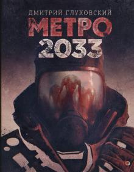

Metro 2033

«Метро́ 2033» — постапокалиптический роман Дмитрия Глуховского, описывающий жизнь людей в московском метро после ядерной войны на Земле. Выпущен издательством «Эксмо» в 2005 году и переиздан издательством «Популярная литература» в 2007 году. На европейском литературном конкурсе «Еврокон» роман назван «Лучшим дебютом» 2007 года.
Меньше чем за три месяца тираж переиздания в 100 тысяч экземпляров был полностью продан, издательство выпустило дополнительный 100-тысячный тираж, который был распродан менее чем за год к маю 2008 года, третий тираж составил 50 тысяч экземпляров. Одна из презентаций прошла в рассекреченном бункере Министерства связи на Таганке на глубине 60 метров. Роман также лёг в основу компьютерной игры Metro 2033.
@2035 для связи с разработчиками +375291751320
электронная почта-staintimofej@gmail.com